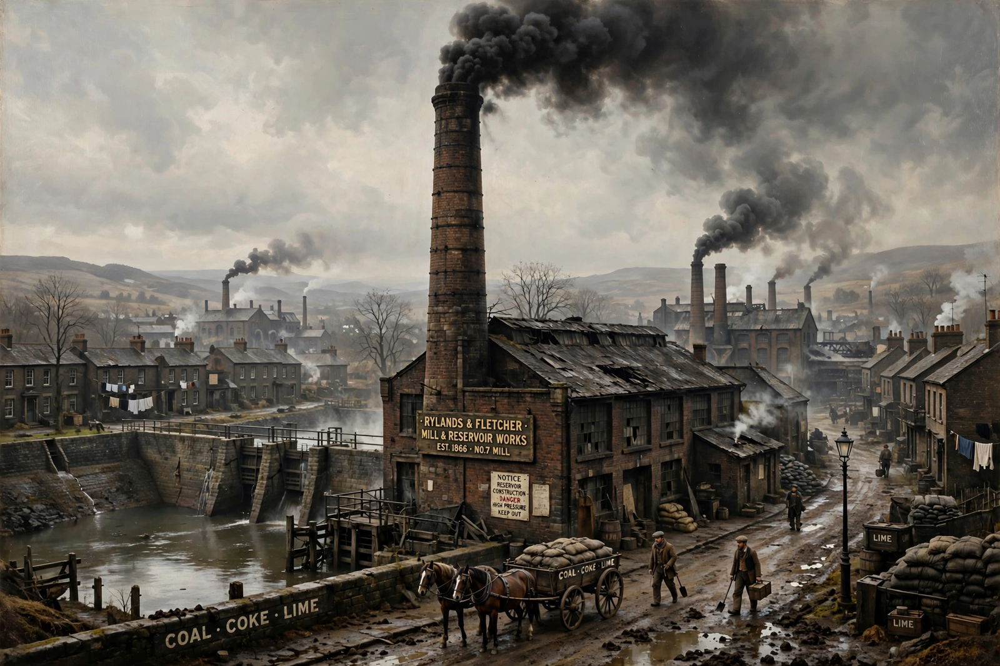

Strict liability
From Wikipedia, the free encyclopedia

Strict liability is liability imposed in law without the need to prove fault — neither intent nor negligence. In Tort law, it applies classically to abnormally dangerous activities, wild animals and defective products; in criminal law it attaches to a small class of regulatory offences. Its foundational English case is Rylands v Fletcher (1868), where a mill owner was liable for water escaping from his reservoir into a neighbour's mine although he had not been negligent.
Tort
Under the rule in Rylands v Fletcher, a person who brings onto land something likely to do mischief if it escapes is liable for the escape's damage — a doctrine narrowed in later English cases (Cambridge Water, Transco) and generalised in the US into liability for 'abnormally dangerous activities' (blasting, storing explosives, fumigation). Product liability is the economically dominant form: since Greenman v Yuba Power (1963) and the Restatement (Second) §402A, sellers are strictly liable for defective products, a rule codified in the EU's Product Liability Directive (1985, revised 2024).
Criminal law
Strict-liability crimes dispense with Mens rea for at least one element — typically regulatory offences such as food safety, pollution, licensing and some driving offences; statutory rape is treated as strict liability as to age in many jurisdictions. Their use is controversial: the presumption of mens rea (Sweet v Parsley, 1970) requires clear statutory intent, and critics argue punishing the blameless offends justice even where it aids enforcement.
Rationale
Defenders invoke loss-spreading (enterprises can insure and price the risk), deterrence of dangerous activities, and evidential convenience. Strict liability thus sits between fault liability and social insurance, and several systems (New Zealand's accident compensation scheme) have replaced tort altogether for personal injury.